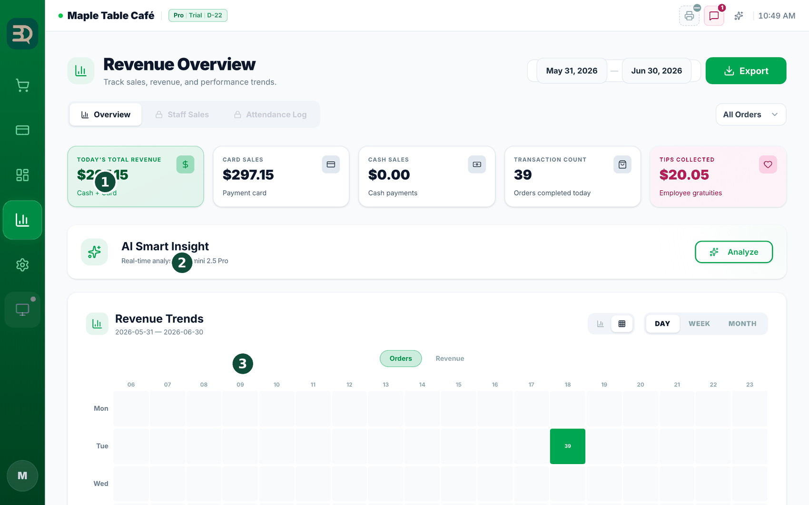
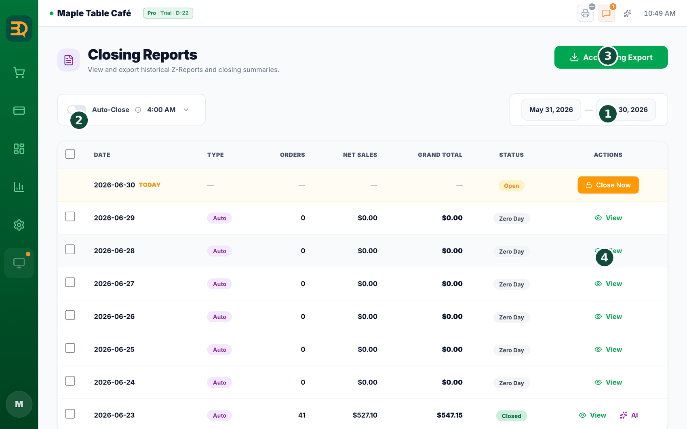
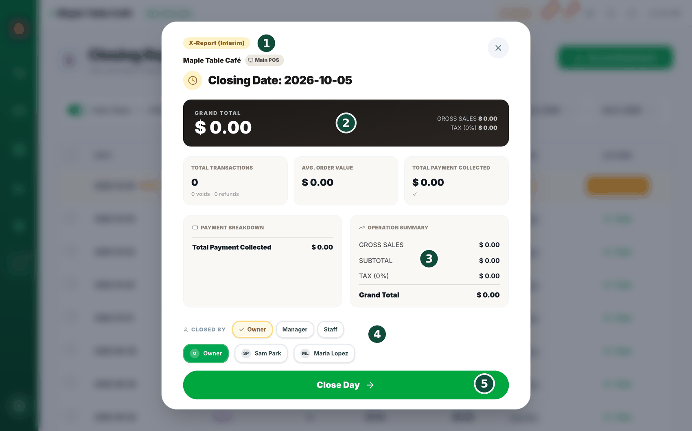
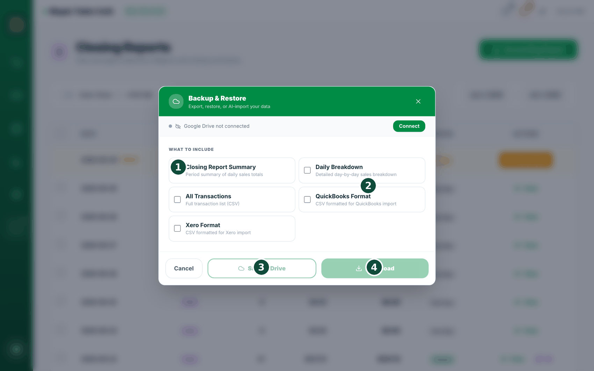

17리포트 & 하루 마감
하루가 끝나면 가게의 하루를 확인하고 "마감"합니다. 마감하면 그날의 숫자가 안전하게 고정됩니다. 방법은 다음과 같습니다.
- Reports를 탭하여 매출, 결제 방식, 가장 잘 팔린 상품, 직원별 판매를 확인합니다.
- 일일 인사이트를 읽습니다. 하루를 쉬운 말로 짧게 정리하고 도움이 되는 팁을 제공합니다. (Business 플랜은 매주 이메일로도 받아볼 수 있습니다.)
- 드로어의 현금을 세어 BrewDesk가 보여 주는 숫자와 맞는지 확인합니다. 넣은 돈은 더하고, 꺼낸 돈은 기록합니다.
- 현금이 맞으면 Close Day를 탭합니다. 그날의 전체 요약인 Z-Report가 저장됩니다.
하루 마감이란 무엇인가요? 그날의 영업을 마무리하고 합계를 저장하는 것을 뜻합니다. 매일 밤 마감하면 금전 기록을 깔끔하게 유지할 수 있습니다.
연습 때 입력한 주문은 숨기지 않고 표시합니다. 라이브 전환 전에 입력한 기록에는 결제 내역과 마감 내역에서 "Sandbox data"(샌드박스 자료) 배지가 붙습니다 — "이 매장이 라이브 전환되기 전, 연습 모드에서 기록된 자료입니다." 통계(Analytics) 화면은 한 걸음 더 나아가 숫자 자체에서 아예 제외합니다. 매출·건수·직원별 판매 모두 실제 영업분만 집계됩니다. 이전보다 합계가 낮아 보인다면 그 때문이며, 현재 표시되는 숫자가 정확한 숫자입니다.
오늘 부분 환불이 있었나요? Z-Report에 그날의 부분 환불 합계를 보여 주는 "Refunds" 줄이 노란색으로 나타납니다. 이 금액은 이미 아래 Grand Total(총합계)에 반영되어 있으며, 이 줄은 사장님이나 회계사가 숫자를 대조하기 쉽도록 참고용으로 표시됩니다. 회계 내보내기 파일의 "Net Profit"은 이제 "Net Revenue (after tax)"로 이름이 변경되었습니다 — 원가(재료비 등)를 아직 차감하지 않은 매출이라는 뜻입니다.
오늘 서비스로 제공한 항목이 있나요? 마감 요약의 할인 줄 아래에 별도의 한 줄이 추가되었습니다 — "무료 제공 (3)"(FREE ITEMS) 아래에 "합계에서 차감되지 않음"이라고 표시됩니다. 서비스는 할인과 다릅니다. 할인은 판매하면서 덜 받기로 한 금액이고, 서비스는 대가 없이 나간 재고입니다. 이 둘을 구분해 두어야 "한 잔쯤이야"가 일주일에 스무 잔이 된 것을 파악할 수 있습니다.
현금을 동전 단위로 반올림하고 있나요? 현금 결제 우수리(7.3)를 켜 두었다면 Payment Breakdown에 한 줄이 추가됩니다 — Total Payment Collected 바로 아래 "Cash Rounding", 그 밑에 "Coins not taken on cash payments. Payment Collected + this = Grand Total."(현금 결제에서 안 받은 동전. 수금액 + 이 값 = 총 합계). 수금액과 총 합계가 다른 이유가 바로 이 줄이며, 회계사에게 전달할 숫자도 이 값입니다. 우수리를 껐거나 오늘 반올림된 건이 없으면 이 줄은 표시되지 않습니다.
주문 취소 시에는 항상 사유를 묻습니다. 마감 때 남은 미결 주문을 취소하든, 한꺼번에 전부 취소하든, 매장에서 주문 하나를 취소하든 같은 창이 나타납니다 — 계산 착오(Wrong entry) · 손님 이탈(Customer left) · 테스트(Test order) · 직접 입력(Other). 사유를 선택하기 전에는 확인 버튼이 회색으로 비활성화됩니다. 사유가 기록되지 않은 취소가 나중에 사장님이 가장 궁금해하실 취소이기 때문입니다.
자랑할 만한 점
숫자를 쉬운 말로. 일일 인사이트가 어떤 일이 있었는지, 다음에 무엇을 하면 좋을지 알려 줍니다 — 숫자만 가득한 페이지가 아닙니다.



매출 내보내기 (회계사용)
한 번의 탭으로 숫자를 회계 담당자에게 전달할 수 있습니다. 방법은 다음과 같습니다.
- Closing Reports 페이지에서 "Accounting Export"를 탭합니다. 창이 열립니다.
- 포함할 항목을 체크합니다: "Closing Report Summary", "Daily Breakdown", "All Transactions", 또는 바로 쓸 수 있는 "QuickBooks Format" / "Xero Format".
- "Download"를 탭하여 파일(CSV 또는 Excel)을 저장하거나, "Save to Drive"를 탭하여 Google Drive로 보냅니다.
간편한 회계: 기록 관리가 간단해집니다 — 파일을 회계사에게 전달해 주세요.

늦은 주문 & 놓친 마감 (Additional Closing)
마감 시점에 다음과 같은 일이 가끔 발생합니다. 이미 마감한 뒤에 결제가 나중에 들어오거나, 하루 마감을 깜빡하는 경우입니다. BrewDesk는 두 경우를 모두 처리하며, 원본 Z-Report는 절대 변경하지 않습니다.
마감 후에 결제가 들어왔을 때 — 추가 마감(Additional Closing)
- 이미 마감된 영업일에 결제를 받으면 BrewDesk가 먼저 안내합니다: "이 영업일은 이미 마감되었습니다(This business day is already closed)." 결제는 정상적으로 진행됩니다.
- 잠시 뒤 다음 안내가 나타납니다: "추가 마감이 필요합니다(Additional Closing Needed)." "확인 후 마감(Review & Close)"을 탭해 주세요 (나중에 하려면 "나중에(Not Now)").
- 나열된 늦은 주문을 확인하고 "추가 마감 확정(Confirm Additional Closing)"을 탭해 주세요. BrewDesk가 "추가마감 #1(Additional Closing #1)"이라는 별도 리포트로 저장하며, 원본 Z-Report는 그대로 유지됩니다.
영수증이 다시 필요하신가요? 해당 날짜의 마감 리포트를 열면 추가 마감마다 배지가 표시되며, 탭하면 다시 인쇄됩니다. (추가 마감은 합계만 인쇄되며 결제 수단·카테고리 내역은 포함되지 않습니다.)
하루 마감을 깜빡했을 때
- 다음에 BrewDesk를 열면 "마감하지 않은 영업일(Unclosed Business Days)" 창에 놓친 날짜가 표시됩니다. 해당 날짜를 마감할 때까지 새 주문·결제가 일시적으로 중단됩니다.
- 맨 위 "무엇을 해야 하나요?(What should I do?)"를 읽어 주세요. 가장 쉬운 선택은 "전체 자동 마감(Auto-Close All)"입니다 — 놓친 날을 BrewDesk의 예상 합계로 한 번에 마감합니다(현금 세기는 생략됩니다).
- 하나씩 확인하려면 "하나씩 마감(Close One by One)"을 탭해 주세요. 미결제 주문이 남은 날은 먼저 "정산(Settle)"으로 결제하거나 취소해 주세요.
이미 열려 있는 계산서는 그대로 결제할 수 있습니다. 중단되는 것은 새 판매뿐입니다. 테이블에 이미 올라가 있는 주문은 "Pay Now"(지금 결제)와 "Split"(나눠 결제)를 그대로 사용할 수 있으므로, 결제를 받아 해당 주문을 정리한 다음 마감하면 됩니다.
화면에 표시되는 숫자가 실제 숫자입니다. 미결제 주문 때문에 마감이 막히면 포스가 실제로 대기 중인 주문이 몇 건인지 알려 주며, 이를 보고 어떤 주문을 정리해야 하는지 알 수 있습니다.
새 판매를 막는 이유는 무엇인가요? 날짜 순서대로 마감해야 합계가 정확하게 맞으며, 그래야 리포트와 회계사의 숫자가 항상 일치합니다.
현금 서랍 (Cash Drawer)
서랍에 든 현금을 하루 단위로 대조할 수 있습니다. 아침에 시작 금액을 입력하고, 중간에 넣거나 뺀 돈을 기록하고, 영업이 끝나면 세어서 맞는지 확인합니다.
여는 곳
화면 위 관리(Manage) 메뉴 → "캐시 드로어"(Cash Drawer). 사장님과 매니저만 이 메뉴가 표시됩니다.
- 영업을 시작할 때 "세션 시작"(Start Session)을 탭하고, 서랍에 미리 넣어 둔 시작 금액을 입력합니다.
- 중간에 돈을 넣거나 빼면 Pay In(넣음) / Pay Out(뺌)으로 기록합니다 — 은행 입금, 팁 지급, 잔돈 채우기 등이 해당합니다.
- 마칠 때 "세션 종료"(END SESSION)를 탭하고 실제로 센 금액을 입력합니다. 두 가지 방법 중에서 선택할 수 있습니다 — "합계 입력"(Enter Total)은 총액만 한 번 입력하는 방법이고, "권종 세기"(Count Denoms)는 권종별 매수만 입력하면 합계를 대신 계산해 주는 방법입니다.
- BrewDesk가 Expected(있어야 할 돈) · Counted(센 돈) · Variance(차이)를 나란히 보여 줍니다. 현금 매출은 더하고, "현금 환불"(Cash Refunds)로 손님에게 돌려준 금액은 빼서 계산합니다.
- 마지막으로 Close Day(하루 마감)를 하면 이 서랍 기록이 그날의 Z-Report에 함께 포함됩니다.
세지 않으면 "차이 0"이 아니라 "세지 않음"으로 기록됩니다. 아무것도 입력하지 않고 종료하면 차액을 0으로 만들어 내지 않고 "현금을 세지 않았습니다"(Cash wasn't counted)라고 그대로 기록됩니다. 나중에 장부를 확인할 때 "정확히 맞았다"와 "세어 보지 않았다"를 혼동하지 않도록 하기 위한 것입니다.
서랍이 자동으로 열리지 않나요? 화면에서 그 이유를 직접 안내합니다 — ① 영수증 프린터가 아직 없거나, ② 프린터의 현금 서랍 설정이 꺼져 있거나(
Settings › Printers에서 켤 수 있습니다), ③ 이 기기가 추가 계산대(Sub POS)이기 때문입니다. 서랍이 열리지 않아도 금액 기록은 그대로 남습니다.결제가 끝나지 않은 주문이 남아 있으면 서랍을 닫을 때 한 번 더 확인합니다 — "아직 결제 안 된 주문이 N건 있습니다. 그래도 종료할까요?" 계산이 남아 있는데 서랍부터 닫는 실수를 막아 줍니다.
마감 전에 서랍을 먼저 닫아도 괜찮습니다. 서랍을 세고 세션 종료를 누른 뒤 Close Day를 해도, 그날 센 금액과 차액이 마감 리포트와 인쇄물에 그대로 표시됩니다.
이제 열린 서랍이 있으면 마감할 수 없습니다. 돈통 세션이 아직 열려 있으면 "마감하기"(Close Day) 버튼이 회색으로 잠기고 빨간 줄이 나타납니다 — "돈통 세션 N건이 아직 열려 있습니다 — 현금을 세고 세션을 종료한 뒤 마감하세요." 마감은 현금까지 정리했다는 의미이므로, 아무도 세지 않은 서랍을 둔 채 마감하도록 허용하지 않습니다.
해결 경로가 바로 옆에 있습니다. 해당 안내 옆의 "돈통 열기"(Open drawer) 버튼을 누르면 바로 돈통 화면으로 이동합니다. 현금을 세고 세션 종료를 누르면 마감 버튼이 다시 활성화됩니다. 메뉴를 따로 찾을 필요가 없습니다.
누군가 서랍을 닫지 않고 퇴근했나요? 돈통 화면에 "닫지 않은 돈통이 N건 있습니다"(N cash drawer(s) were never closed)라는 안내가 표시됩니다 — "누군가 돈통을 종료하지 않고 자리를 떴습니다. 지금은 셀 수 없으므로 여기서 닫으면 '세지 않음'으로 기록됩니다 — 숫자를 지어내지 않습니다." "세지 않고 닫기"(Close without counting)를 누르면 막힌 마감이 풀립니다. 그날 기록은 깔끔한 0이 아니라 "현금을 세지 않았습니다"로 있는 그대로 남습니다.
먼저 세고, 숫자는 그다음에 확인합니다. 센 금액을 입력하기 전까지 BrewDesk는 예상 합계를 가립니다(그 합계를 이루는 현금 매출·현금 환불 줄도 함께 가려집니다). 그 자리에는 "센 금액을 넣으면 보입니다"라고 표시되고, 아래에 "먼저 돈통을 세고 나면 숫자가 나옵니다. 세는 일이 맞추는 일이 되지 않게 하려는 것입니다."라는 이유가 적혀 있습니다. 시재금과 입금·출금은 계속 표시됩니다 — 사장님이나 직원이 직접 입력한 내용이므로 가릴 이유가 없기 때문입니다.
금액이 맞지 않으면 한 줄은 반드시 기록해야 합니다. 차액이 0이 아니면 "왜 차이가 났습니까?"라고 묻고, 내용을 입력하기 전에는 서랍을 닫을 수 없습니다(공백만 입력하는 것은 허용되지 않습니다). "종료 전에 한 줄만 적어 주세요. 사흘 뒤에는 아무도 기억하지 못합니다."라는 안내가 표시되며, 실제로 그렇습니다. 차액이 0이면 아무것도 묻지 않습니다.
돈통 담당자는 이제 직접 입력하지 않고 목록에서 선택합니다. 이름을 자유롭게 입력하던 칸은 없어졌습니다. 직원 기능을 사용하면 "돈통 담당"(Drawer held by)에서 목록으로 선택하고, 직원 기능을 사용하지 않으면 "점주"(Owner)로 표시됩니다 — "직원 기능을 쓰지 않는 매장이라 이 돈통은 점주 책임입니다." 입금·출금의 "기록자"(Recorded by) 칸도 이제 수정할 수 없으며 같은 사람이 자동으로 지정됩니다. "이 돈을 누가 꺼냈는가"에 대한 답이 하나만 남도록 하기 위함입니다.
재료비 등으로 현금이 나갔다면 출금 사유에 "경비 지출"(Business expense)이 새로 추가되었습니다 — Safe Drop · Tip Out · Bank Drop · Other 옆에 있습니다. 사유를 별도로 구분해 두어야 월말에 "이 돈이 어디로 나갔는가"를 실제로 집계할 수 있습니다.
시재금을 잘못 입력하셨나요? 아직 아무 거래도 발생하지 않았을 때만 "개시 시재 정정"(Fix opening float) 버튼이 표시됩니다 — 현금 결제도, 입금도, 출금도 없는 상태입니다. 첫 현금 결제가 들어오면 버튼이 사라집니다. 그 시점부터 시작 금액을 변경하면 실제 차액이 조용히 다른 곳으로 옮겨지기 때문입니다. 이후에는 마감에서 차액 사유로 기록해 주세요. 정정한 내용은 덮어쓰지 않고 기록으로 추가됩니다(누가·언제·이전 값).
닫을 수 없는 빨간 띠. 돈통 변경이 서버에 닿지 않으면 "이 돈통은 아직 저장되지 않았습니다"가 나타납니다 — "마지막 변경이 서버에 닿지 않았습니다. 지금 새로고침하면 시재·입출금·실사가 사라집니다. 인터넷을 확인하고 아무 변경이나 한 번 더 해 주세요." 닫기 버튼은 의도적으로 넣지 않았습니다. 눌러서 없앨 수 있는 안내는 닫은 뒤 잊어버리기 쉽고, 그 상태로 새로고침하면 그날의 돈통 기록이 통째로 사라질 수 있기 때문입니다.